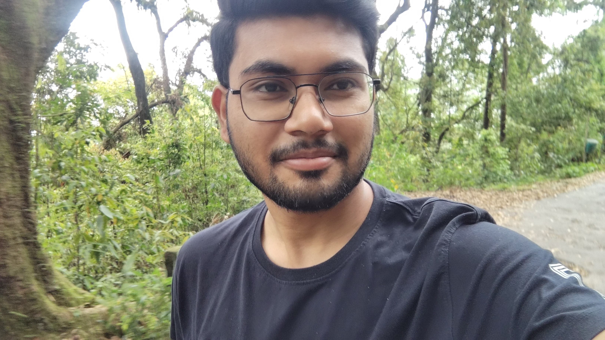

Site under construction!🤗

I am an interdisciplinary learner with curiosity across technology, intelligence, data, finance, and human behavior. Rather than limiting myself to a single field, I enjoy exploring how different disciplines connect and influence each other.
Exploring machine learning, computer vision, intelligent systems, and the future of AI.
Interested in financial markets, quantitative analysis, investing, and financial technology.
Understanding data, probability, patterns, uncertainty, and analytical decision making.
Exploring human behavior, decision making, cognition, and the psychology behind choices.
Fascinated by machines, technology, automation, and intelligent systems.
Exploring image processing, computer vision, visual analysis, and machine learning applications.
Using Python and statistics to explore, analyze, and visualize meaningful patterns in data.
Applying data analysis and statistical thinking to financial problems and markets.
Interested in technology, intelligence, data, finance, and exploring ideas across disciplines.